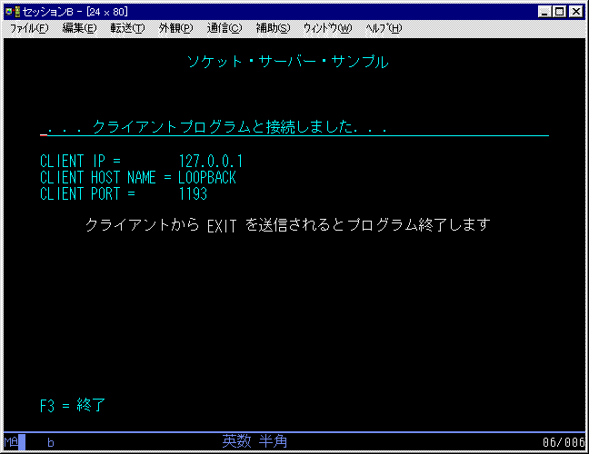

TCPファイル転送サーバープログラム
Return
［例］
【解説】
クライアントからの接続をまち、接続後は、画面に接続相手の情報を表示したのち、
接続要求まちのソケットをクローズしてから、データの送受信を行う。
クライアントからの接続要求がこないとタイムアウトして終了する。
接続完了後に、クライアントからデータが送信されてこないと、TIMEOUTメッセージを画面表示しLOOPする。
クライアントから転送するファイル名を取得し、そのファイルを一括送信する。
【実行結果】

[Return]